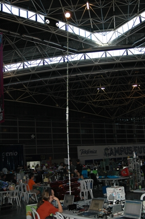
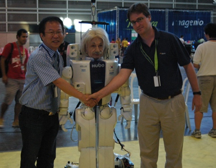

Llevamos ya dos días en Campus Party 2007. Después de dos jornadas sin parar hemos tenido el escaso tiempo de poder publicar algunas de las Frikadas que hemos hecho hasta ahora.
La primera fue construir el Faro más alto de la Campus y controlarlo con la nueva tarjeta SkyLamp

La segunda ha sido conocer al robot Albert Hugo del profesor Jun Ho Oh.

Pedazo de Faro!!! Y desde el primer dÃa!!! Esto promete 😀 Enhorabuena por el trabajo y adelante!!! A frikear!!!!
Cuando he visto en la página del wiki que os buscaran por el faro he pensado "pues si que tiene que verse bien". Pero ahora lo entiendo todo: Es que se ve muy bien!!! Y más de noche. Una pena no estar allí para vivirlo.